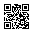

🎯 어떤 활동인가요
‘진짜 미소(뒤센 미소)’는 입(큰광대근)뿐 아니라 눈(눈둘레근)까지 함께 웃는 미소예요. 이 앱은 카메라로 그 둘을 함께 보고 0~100점으로 점수화합니다. 입만 억지로 벌려선 100점이 안 나오고, 눈까지 진짜로 웃어야 점수가 올라가요 — 그 경험 자체가 수업의 메시지가 됩니다.
🧰 준비물
- 카메라(웹캠)가 있는 기기 — 노트북·태블릿·스마트폰 모두 OK
- 크롬 또는 사파리 최신 브라우저 권장: 크롬
- 인터넷 연결(첫 실행 때 분석 모델을 잠깐 내려받아요)
▶️ 사용법
- 아래 주소(또는 QR)로 접속해요.
- 카메라 권한을 허용합니다.
- ‘도전 시작’ → 별명 입력 → 얼굴을 가이드 안에 맞춰요.
- 카운트다운 후 5초 동안 가장 환하게 웃어요.
- 점수·등급·내 미소 사진을 확인하고, 순위판에 등록!
교실에선 선생님 기기 1대를 프로젝터(TV)에 연결해 한 명씩 도전하는 ‘키오스크’ 방식으로 쓰기 좋아요. 순위판은 그 기기에 그날치가 쌓이고, ‘오늘 순위 초기화’로 비울 수 있어요.
첫 화면의 ⚙️ 설정에서 채점 난이도(후하게/보통/깐깐)·측정 시간·소리 효과를 바꿀 수 있어요(기기별 저장). 프로젝터에 띄울 땐 ⛶ 전체화면이 편해요.
🔒 개인정보 — 안심하세요
- 카메라 영상과 분석은 전부 기기 안(브라우저)에서만 처리돼요.
- 서버 업로드·저장이 전혀 없습니다. 결과 사진도 화면에만 잠깐 보이고 저장되지 않아요.
- 순위판에 남는 건 별명·점수 텍스트뿐(그 기기에만).
미성년자 카메라를 쓰는 활동이므로, 각 학교 방침에 따라 사용해 주세요.
💚 수업에서 이렇게 써요
- 점수는 평가·진단이 아니라 ‘즐거운 표정 놀이’로 안내해 주세요. 등급 이름도 모두 긍정형이에요.
- “왜 눈이 함께 웃어야 진짜일까?”로 감정 표현·진심 이야기로 자연스럽게 연결돼요.
- 점수가 낮아도 “눈을 더 써서 웃어보자!”는 격려로. 정죄·줄세우기는 피해주세요.
📱 접속하기
smile.uzu.kr

QR을 수업 슬라이드·게시판에 붙이면 각자 기기에서 바로 도전할 수 있어요.
이 기기에서 바로 시작 →